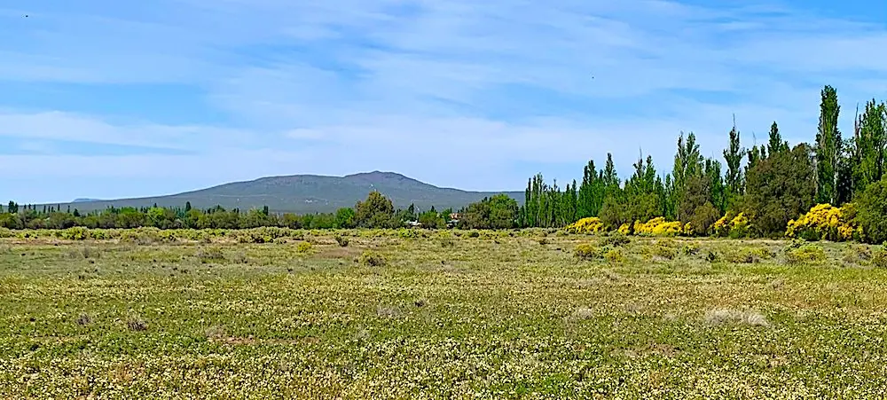
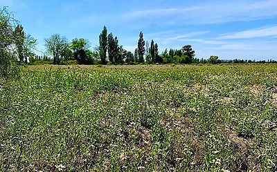

Rama Caida, San Rafael, Mendoza
54 Acres of Prime Leveled Farmland with Great View
Good Water! Building Site Potential

La description complète de ce bien est encore en anglais. Nous les traduisons une par une. En attendant, demandez à Byron sur WhatsApp ou par e-mail — il vous racontera tout en français.
This 22-hectare farm (54 Acres) is located with great access just 8 miles from the center of town and has very nice views of the painted hills (Sierra Pintadas).
Location and view makes this a perfect farm to build a house or tourist cabins. It is on a paved road in an area where people build weekend homes and cabins.
The soil is prime farmland, located in Rama Caida, an area well-suited for many types of crops, orchard, vineyard or nuts.

The land was previously farmed in oregano and aromatic herbs, but has been fallow for about 5 years.
It is owned by a corporation which could easily be transferred to a new buyer or sold without it.
Les autres photos
6 photos supplémentaires de ce bien. Touchez-en une pour l'agrandir.


{kind=link}
{kind=link}
{kind=link}
{kind=link}
{kind=link}
{kind=link}
{kind=link}